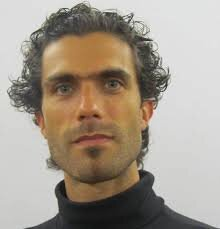

Chef de chœur depuis janvier 2026
Sébastien Vidal
Formé à la direction au conservatoire de Saint-Étienne puis au Pôle supérieur de Rennes, il obtient en 2019 le Diplôme National Supérieur de Musicien en direction de chœur. Il dirige plusieurs chœurs d'adultes et la Maîtrise de la Loire.
Son travail repose sur la pédagogie de la voix, l'appropriation du discours musical par chacun et la conscience collective du groupe, pour que s'exprime pleinement « le son du chœur ».